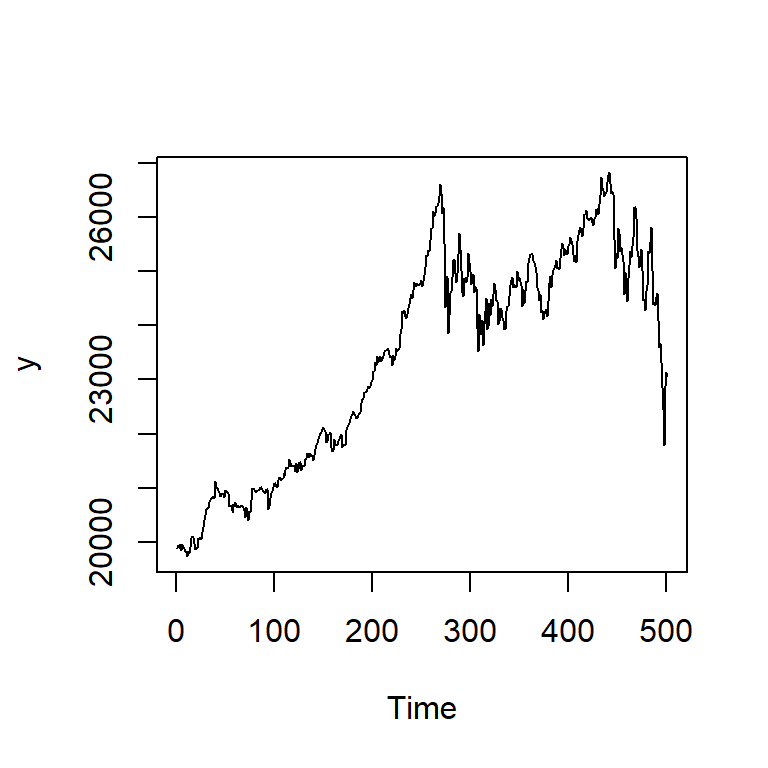
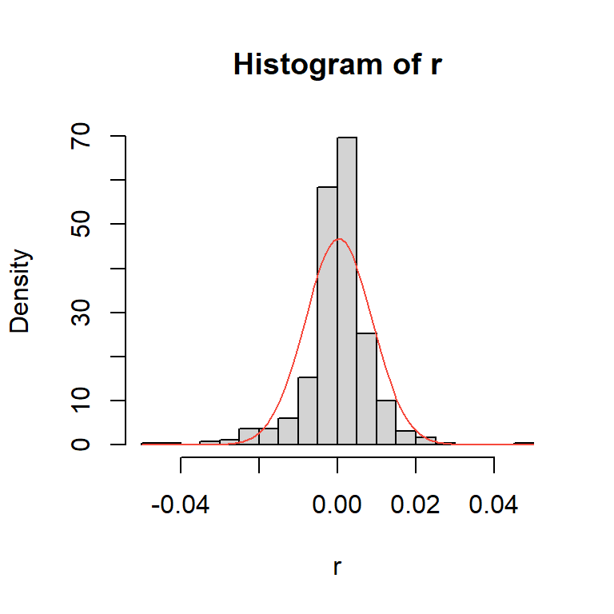
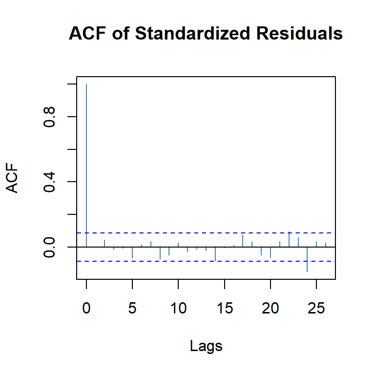
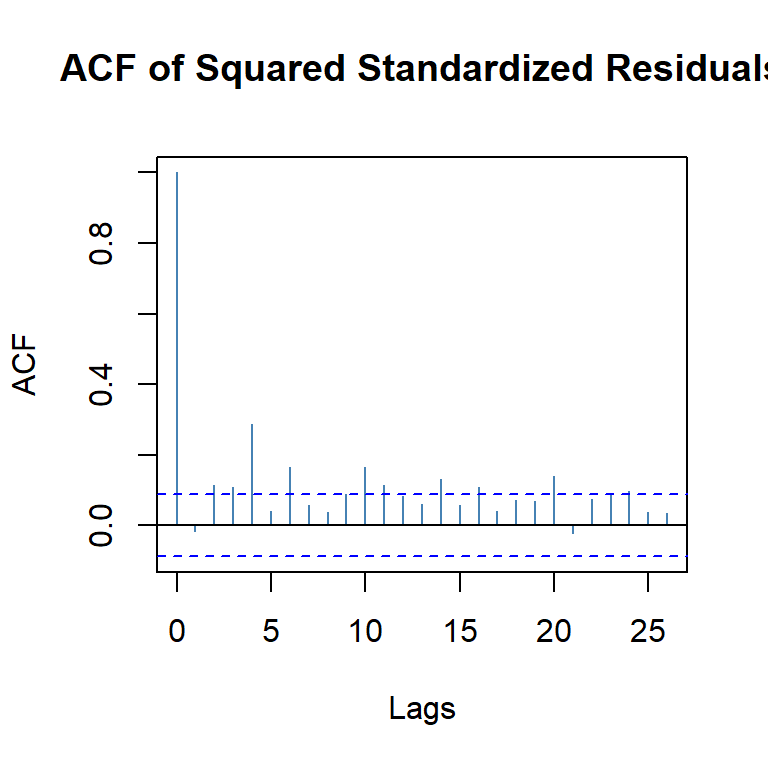
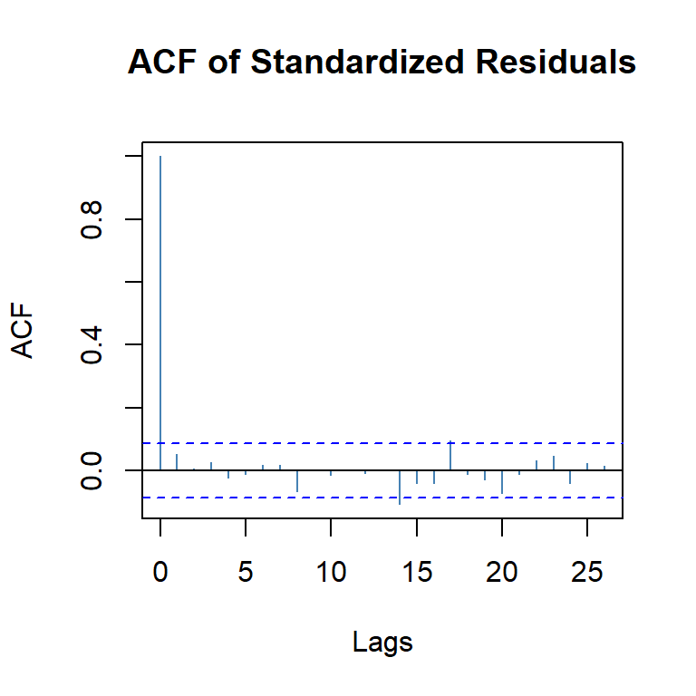
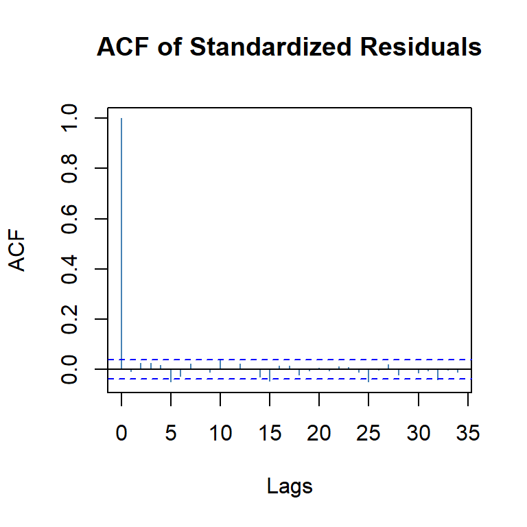
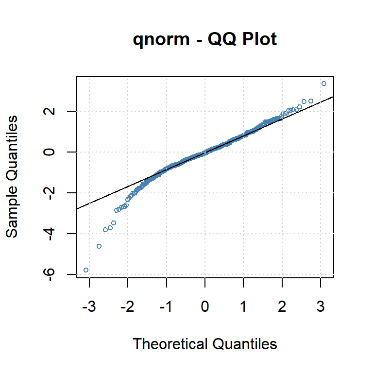
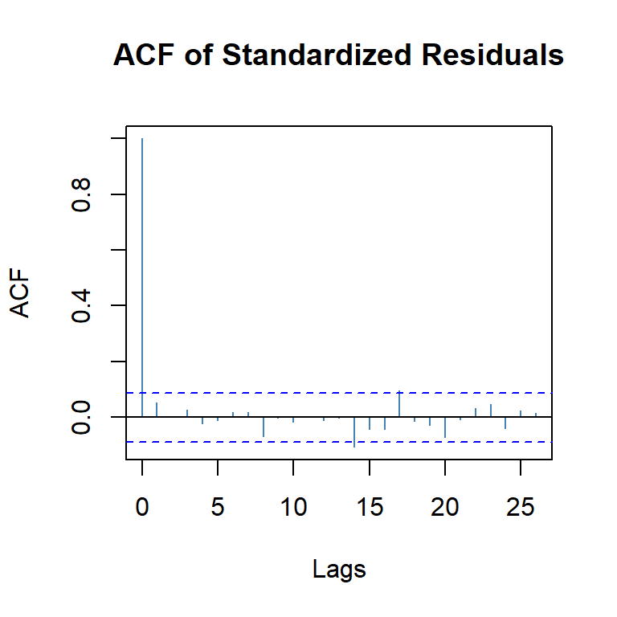
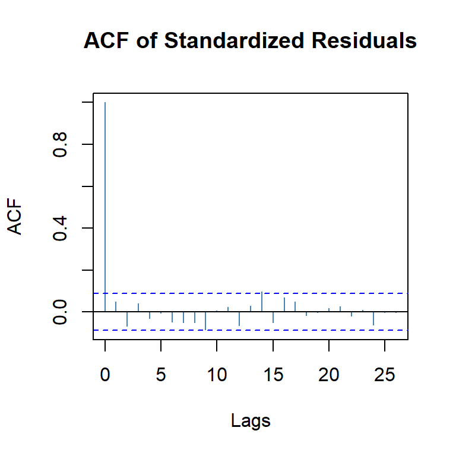

![]()
library(forecast)
library(astsa)
library(fGarch)
library(tseries)
library(xts)
library(TSA)
library(car)
library(quantmod)Tema VIII-a: Modelos no lineales: ARCH y GARCH.
1 librerías
2 Ejemplos simulados
2.1 ARCH(1)
set.seed(123456)
spec = garchSpec(model = list(gamma=0.01,alpha = c(0.8), beta = 0))
y1<-garchSim(spec, n = 1000)
ts.plot(y1)acf2(y1) [,1] [,2] [,3] [,4] [,5] [,6] [,7] [,8] [,9] [,10] [,11] [,12] [,13]
ACF 0 0.04 -0.01 -0.01 -0.02 -0.01 0 -0.01 0 -0.04 0.08 0.02 -0.02
PACF 0 0.04 -0.01 -0.02 -0.02 -0.01 0 -0.01 0 -0.04 0.08 0.02 -0.03
[,14] [,15] [,16] [,17] [,18] [,19] [,20] [,21] [,22] [,23] [,24] [,25]
ACF 0.02 0.03 -0.02 0 -0.02 -0.05 0.02 0.01 -0.02 -0.03 0.03 0.03
PACF 0.02 0.03 -0.02 0 -0.02 -0.05 0.02 0.02 -0.03 -0.04 0.04 0.03
[,26] [,27] [,28] [,29] [,30] [,31] [,32] [,33] [,34] [,35] [,36] [,37]
ACF 0.03 -0.01 0.04 -0.04 -0.01 -0.05 0.03 0.00 -0.04 -0.02 0.01 0.05
PACF 0.01 -0.01 0.04 -0.04 0.00 -0.04 0.03 0.01 -0.04 -0.03 0.01 0.05
[,38] [,39] [,40] [,41] [,42]
ACF -0.01 -0.02 0.02 0.01 0.01
PACF -0.01 -0.04 0.02 0.01 0.01ts.plot(y1^2)acf2(y1^2) [,1] [,2] [,3] [,4] [,5] [,6] [,7] [,8] [,9] [,10] [,11] [,12] [,13]
ACF 0.57 0.38 0.24 0.11 0.10 0.06 0.04 0.03 0.02 0.03 0.04 0.03 0.05
PACF 0.57 0.08 0.00 -0.07 0.08 -0.02 0.00 0.00 0.01 0.03 0.02 -0.01 0.04
[,14] [,15] [,16] [,17] [,18] [,19] [,20] [,21] [,22] [,23] [,24] [,25]
ACF 0.05 0.07 0.02 0.00 -0.02 -0.02 -0.04 -0.04 -0.05 -0.05 -0.04 -0.05
PACF 0.01 0.04 -0.07 -0.01 -0.02 0.03 -0.05 0.00 -0.03 0.01 -0.02 -0.01
[,26] [,27] [,28] [,29] [,30] [,31] [,32] [,33] [,34] [,35] [,36] [,37]
ACF -0.04 -0.05 -0.05 -0.05 -0.04 -0.05 -0.01 0.00 0.02 0.01 -0.01 -0.03
PACF -0.02 -0.02 -0.01 -0.01 -0.01 -0.01 0.04 0.02 0.01 -0.01 -0.02 -0.02
[,38] [,39] [,40] [,41] [,42]
ACF -0.03 -0.03 -0.06 -0.06 -0.05
PACF 0.00 -0.01 -0.04 -0.01 0.012.2 ARCH(2)
spec = garchSpec(model = list(alpha = c(0.2, 0.4), beta = 0))
y1<-garchSim(spec, n = 1000)
ts.plot(y1)acf2(y1) [,1] [,2] [,3] [,4] [,5] [,6] [,7] [,8] [,9] [,10] [,11] [,12] [,13]
ACF 0.02 -0.1 0.04 0.02 0 0.05 -0.02 -0.01 0.04 -0.07 -0.05 0.03 0.00
PACF 0.02 -0.1 0.04 0.01 0 0.05 -0.03 0.00 0.04 -0.08 -0.04 0.02 -0.01
[,14] [,15] [,16] [,17] [,18] [,19] [,20] [,21] [,22] [,23] [,24] [,25]
ACF -0.02 0.01 0.04 -0.03 -0.03 -0.05 -0.04 -0.02 0.05 0 -0.04 0.03
PACF -0.01 0.01 0.04 -0.03 -0.03 -0.06 -0.05 -0.04 0.04 0 -0.03 0.04
[,26] [,27] [,28] [,29] [,30] [,31] [,32] [,33] [,34] [,35] [,36] [,37]
ACF -0.04 -0.03 0.04 0.03 0 0.04 -0.04 -0.03 0.05 0.01 -0.01 0.05
PACF -0.04 -0.02 0.02 0.03 0 0.03 -0.04 -0.01 0.03 0.01 0.01 0.03
[,38] [,39] [,40] [,41] [,42]
ACF 0.03 -0.03 0.03 0.06 0.02
PACF 0.02 -0.02 0.02 0.06 0.03ts.plot(y1^2)acf2(y1^2) [,1] [,2] [,3] [,4] [,5] [,6] [,7] [,8] [,9] [,10] [,11] [,12] [,13]
ACF 0.47 0.57 0.34 0.31 0.24 0.18 0.15 0.09 0.12 0.11 0.10 0.11 0.05
PACF 0.47 0.45 -0.02 -0.04 0.04 -0.02 0.00 -0.02 0.06 0.06 -0.02 0.03 -0.05
[,14] [,15] [,16] [,17] [,18] [,19] [,20] [,21] [,22] [,23] [,24] [,25]
ACF 0.04 0.02 0.00 0.02 -0.01 0.00 -0.01 0.00 -0.01 -0.01 -0.04 -0.04
PACF -0.06 0.02 -0.01 0.03 -0.02 -0.02 0.01 0.01 -0.02 -0.01 -0.04 -0.01
[,26] [,27] [,28] [,29] [,30] [,31] [,32] [,33] [,34] [,35] [,36] [,37]
ACF -0.04 -0.05 -0.04 -0.04 0.00 -0.01 0.03 -0.02 0.01 -0.02 -0.01 -0.02
PACF 0.01 -0.01 0.01 0.00 0.04 0.00 0.03 -0.05 0.00 -0.01 -0.01 0.01
[,38] [,39] [,40] [,41] [,42]
ACF -0.05 -0.03 -0.05 -0.03 -0.05
PACF -0.05 -0.01 0.01 0.01 -0.042.3 GARCH(1,1)
spec = garchSpec(model = list(alpha = 0.2, beta = 0.4))
y1<-garchSim(spec, n = 2000)
ts.plot(y1)acf2(y1) [,1] [,2] [,3] [,4] [,5] [,6] [,7] [,8] [,9] [,10] [,11] [,12] [,13]
ACF -0.02 0.01 0 0 0 0 -0.03 0.02 0.04 0 0 0.02 0.01
PACF -0.02 0.00 0 0 0 0 -0.03 0.02 0.04 0 0 0.02 0.01
[,14] [,15] [,16] [,17] [,18] [,19] [,20] [,21] [,22] [,23] [,24] [,25]
ACF 0 0.02 -0.04 0.00 0.00 -0.02 -0.04 -0.02 -0.03 0 0.01 -0.02
PACF 0 0.02 -0.04 -0.01 -0.01 -0.02 -0.05 -0.03 -0.03 0 0.01 -0.01
[,26] [,27] [,28] [,29] [,30] [,31] [,32] [,33] [,34] [,35] [,36] [,37]
ACF -0.02 -0.01 0.01 0.07 0.04 -0.05 0.02 -0.01 -0.01 -0.02 0.02 -0.01
PACF -0.02 -0.02 0.02 0.08 0.05 -0.04 0.02 -0.01 -0.01 -0.02 0.03 -0.01
[,38] [,39] [,40] [,41] [,42] [,43] [,44] [,45] [,46] [,47] [,48] [,49]
ACF 0.00 0.01 0.02 0.00 0.01 0.00 0 -0.01 0.00 0.03 0.01 -0.01
PACF -0.02 0.01 0.02 -0.01 0.00 0.01 0 -0.01 0.01 0.03 0.02 -0.01
[,50] [,51] [,52] [,53] [,54] [,55]
ACF 0 -0.01 0.03 -0.03 0.01 -0.01
PACF 0 -0.01 0.03 -0.03 0.01 -0.01ts.plot(y1^2)acf2(y1^2) [,1] [,2] [,3] [,4] [,5] [,6] [,7] [,8] [,9] [,10] [,11] [,12] [,13]
ACF 0.26 0.11 0.03 0.04 0.02 0.02 0.01 0.02 0.04 -0.03 -0.03 -0.01 -0.02
PACF 0.26 0.04 -0.01 0.04 0.00 0.01 0.00 0.01 0.03 -0.06 -0.01 0.00 -0.02
[,14] [,15] [,16] [,17] [,18] [,19] [,20] [,21] [,22] [,23] [,24] [,25]
ACF -0.01 -0.03 -0.03 -0.03 0.02 0.01 0.03 0.05 0.03 0.02 -0.01 0
PACF 0.00 -0.03 -0.02 -0.02 0.04 0.01 0.02 0.04 0.00 0.01 -0.02 0
[,26] [,27] [,28] [,29] [,30] [,31] [,32] [,33] [,34] [,35] [,36] [,37]
ACF 0.01 0.04 0.04 0.06 0.06 0.07 0.01 0.01 0.00 0.01 0.02 0.02
PACF 0.01 0.03 0.02 0.04 0.03 0.04 -0.03 0.00 -0.01 0.01 0.01 0.01
[,38] [,39] [,40] [,41] [,42] [,43] [,44] [,45] [,46] [,47] [,48] [,49]
ACF -0.04 -0.04 -0.03 0.00 0.00 -0.02 -0.01 0.00 0 -0.02 0.01 0.04
PACF -0.06 -0.02 -0.01 0.01 0.01 -0.02 0.01 0.01 0 -0.02 0.02 0.03
[,50] [,51] [,52] [,53] [,54] [,55]
ACF 0.00 0.00 0.01 0.02 0.04 0.01
PACF -0.03 -0.01 0.01 0.01 0.03 -0.013 Ejemplos:
3.1 promedio diario industrial Dow Jone
data(djia)
y<-djia$Close
plot(y)ts.plot(y)retorno<-diff(log(y))
ts.plot(retorno)acf2(y)
[,1] [,2] [,3] [,4] [,5] [,6] [,7] [,8] [,9] [,10] [,11] [,12] [,13]
ACF 1 1.00 0.99 0.99 0.99 0.99 0.99 0.99 0.99 0.98 0.98 0.98 0.98
PACF 1 0.05 0.03 -0.01 0.01 0.03 0.02 0.02 -0.01 0.01 -0.03 0.01 -0.03
[,14] [,15] [,16] [,17] [,18] [,19] [,20] [,21] [,22] [,23] [,24] [,25]
ACF 0.98 0.98 0.97 0.97 0.97 0.97 0.97 0.97 0.97 0.96 0.96 0.96
PACF -0.01 0.02 0.03 -0.02 -0.01 0.03 -0.01 -0.03 0.01 -0.01 0.00 0.01
[,26] [,27] [,28] [,29] [,30] [,31] [,32] [,33] [,34] [,35] [,36] [,37]
ACF 0.96 0.96 0.96 0.96 0.95 0.95 0.95 0.95 0.95 0.95 0.95 0.95
PACF 0.02 0.01 -0.02 0.03 0.00 0.00 0.00 0.01 0.00 0.03 0.00 0.00
[,38] [,39] [,40] [,41] [,42] [,43] [,44] [,45] [,46] [,47] [,48] [,49]
ACF 0.94 0.94 0.94 0.94 0.94 0.94 0.94 0.94 0.93 0.93 0.93 0.93
PACF -0.01 0.00 0.01 -0.01 -0.03 0.01 0.03 0.00 0.02 0.02 0.00 0.00
[,50] [,51] [,52] [,53] [,54] [,55] [,56] [,57] [,58] [,59] [,60] [,61]
ACF 0.93 0.93 0.93 0.93 0.93 0.93 0.92 0.92 0.92 0.92 0.92 0.92
PACF 0.03 0.02 0.00 -0.01 0.00 0.01 -0.03 0.01 0.01 0.00 0.00 0.01acf2(retorno)
[,1] [,2] [,3] [,4] [,5] [,6] [,7] [,8] [,9] [,10] [,11] [,12] [,13]
ACF -0.1 -0.06 0.05 -0.02 -0.06 0.01 -0.02 0.02 -0.01 0.04 -0.01 0.04 0.01
PACF -0.1 -0.07 0.04 -0.02 -0.06 0.00 -0.02 0.03 -0.01 0.04 -0.01 0.04 0.02
[,14] [,15] [,16] [,17] [,18] [,19] [,20] [,21] [,22] [,23] [,24] [,25]
ACF -0.04 -0.06 0.06 0.00 -0.07 0.02 0.05 -0.06 0.04 0.01 -0.01 0
PACF -0.04 -0.06 0.04 0.02 -0.06 0.00 0.04 -0.04 0.03 0.00 0.00 0
[,26] [,27] [,28] [,29] [,30] [,31] [,32] [,33] [,34] [,35] [,36] [,37]
ACF 0 0.03 -0.03 0.01 0.02 -0.02 0.01 0.01 -0.09 0.03 0.03 -0.02
PACF 0 0.04 -0.03 0.00 0.02 0.00 0.00 0.01 -0.07 0.01 0.02 0.01
[,38] [,39] [,40] [,41] [,42] [,43] [,44] [,45] [,46] [,47] [,48] [,49]
ACF 0 0.03 0.02 0.01 0.00 -0.06 0 0 -0.01 0.02 0.00 -0.04
PACF 0 0.01 0.04 0.02 0.01 -0.06 0 0 -0.01 0.01 -0.01 -0.05
[,50] [,51] [,52] [,53] [,54] [,55] [,56] [,57] [,58] [,59] [,60] [,61]
ACF -0.04 -0.02 0.03 0.00 0.00 0.01 -0.03 0.02 0.02 -0.07 0.02 0.02
PACF -0.04 -0.03 0.01 0.01 0.02 0.01 -0.03 0.01 0.02 -0.05 0.01 0.02mod1 = Arima(retorno, order=c(1,0,1))
summary(mod1)Series: retorno
ARIMA(1,0,1) with non-zero mean
Coefficients:
ar1 ma1 mean
0.2819 -0.3925 2e-04
s.e. 0.1595 0.1532 2e-04
sigma^2 = 0.0001446: log likelihood = 7556.85
AIC=-15105.69 AICc=-15105.68 BIC=-15082.37
Training set error measures:
ME RMSE MAE MPE MAPE MASE
Training set 1.888577e-07 0.01201903 0.007879226 -Inf Inf 0.6620624
ACF1
Training set 0.002990262acf2(mod1$res)
[,1] [,2] [,3] [,4] [,5] [,6] [,7] [,8] [,9] [,10] [,11] [,12] [,13]
ACF 0 -0.02 0.06 -0.02 -0.06 0.01 -0.02 0.02 0.00 0.04 -0.01 0.04 0.01
PACF 0 -0.02 0.06 -0.02 -0.05 0.00 -0.02 0.03 -0.01 0.04 -0.01 0.04 0.01
[,14] [,15] [,16] [,17] [,18] [,19] [,20] [,21] [,22] [,23] [,24] [,25]
ACF -0.05 -0.05 0.05 0.00 -0.07 0.02 0.04 -0.05 0.04 0.01 -0.01 0
PACF -0.04 -0.05 0.05 0.01 -0.06 0.01 0.03 -0.04 0.03 0.00 0.00 0
[,26] [,27] [,28] [,29] [,30] [,31] [,32] [,33] [,34] [,35] [,36] [,37]
ACF 0 0.03 -0.03 0.01 0.02 -0.01 0.01 0.01 -0.08 0.02 0.03 -0.01
PACF 0 0.04 -0.04 0.01 0.02 0.00 0.00 0.00 -0.07 0.02 0.02 0.01
[,38] [,39] [,40] [,41] [,42] [,43] [,44] [,45] [,46] [,47] [,48] [,49]
ACF 0.01 0.03 0.03 0.01 0 -0.06 0.00 0 -0.01 0.01 -0.01 -0.04
PACF 0.00 0.02 0.04 0.02 0 -0.06 0.01 0 -0.01 0.01 -0.02 -0.05
[,50] [,51] [,52] [,53] [,54] [,55] [,56] [,57] [,58] [,59] [,60] [,61]
ACF -0.04 -0.02 0.03 0.00 0.00 0.01 -0.03 0.01 0.02 -0.06 0.02 0.02
PACF -0.04 -0.02 0.02 0.01 0.02 0.00 -0.03 0.01 0.01 -0.05 0.02 0.02checkresiduals(mod1,lag=20)
Ljung-Box test
data: Residuals from ARIMA(1,0,1) with non-zero mean
Q* = 64.409, df = 18, p-value = 3.892e-07
Model df: 2. Total lags used: 20acf2(mod1$res^2) [,1] [,2] [,3] [,4] [,5] [,6] [,7] [,8] [,9] [,10] [,11] [,12] [,13]
ACF 0.2 0.44 0.20 0.34 0.34 0.32 0.33 0.22 0.33 0.24 0.42 0.28 0.26
PACF 0.2 0.42 0.08 0.16 0.24 0.12 0.12 -0.01 0.09 0.04 0.20 0.08 -0.07
[,14] [,15] [,16] [,17] [,18] [,19] [,20] [,21] [,22] [,23] [,24] [,25]
ACF 0.15 0.23 0.27 0.26 0.27 0.17 0.24 0.24 0.19 0.28 0.14 0.2
PACF -0.14 -0.02 0.06 0.04 0.03 -0.03 0.01 0.09 -0.09 0.05 -0.03 0.0
[,26] [,27] [,28] [,29] [,30] [,31] [,32] [,33] [,34] [,35] [,36] [,37]
ACF 0.15 0.28 0.24 0.21 0.16 0.16 0.22 0.13 0.25 0.09 0.18 0.12
PACF 0.01 0.10 0.06 -0.03 -0.04 0.01 0.02 -0.08 0.05 -0.02 -0.03 0.01
[,38] [,39] [,40] [,41] [,42] [,43] [,44] [,45] [,46] [,47] [,48] [,49]
ACF 0.17 0.14 0.10 0.08 0.08 0.11 0.12 0.13 0.09 0.09 0.11 0.07
PACF -0.06 -0.07 -0.06 -0.05 0.03 -0.02 0.03 0.04 0.00 0.00 0.04 -0.03
[,50] [,51] [,52] [,53] [,54] [,55] [,56] [,57] [,58] [,59] [,60] [,61]
ACF 0.08 0.06 0.09 0.06 0.10 0.06 0.12 0.09 0.07 0.08 0.05 0.08
PACF -0.03 0.02 0.06 0.01 -0.01 -0.08 0.08 0.05 0.00 0.00 -0.02 0.013.1.1 GARCH
retorno <- retorno[-1]
head(retorno) Close
2006-04-21 0.0004019814
2006-04-24 -0.0009813081
2006-04-25 -0.0046924330
2006-04-26 0.0062939559
2006-04-27 0.0024646652
2006-04-28 -0.0013512402garch11 <- garchFit(Close~garch(1,1), data=retorno, trace = FALSE)class(garch11)[1] "fGARCH"
attr(,"package")
[1] "fGarch"isS4(garch11)[1] TRUEgarch11@fit$matcoef Estimate Std. Error t value Pr(>|t|)
mu 6.529185e-04 1.556582e-04 4.194565 2.733961e-05
omega 2.203263e-06 4.021494e-07 5.478718 4.284195e-08
alpha1 1.209236e-01 1.323726e-02 9.135090 0.000000e+00
beta1 8.615078e-01 1.326084e-02 64.966292 0.000000e+00Revisar los gráficos que salen con plot(garch11)
#plot(garch11)ACF de la serie original y de la serie original al cuadrado.
plot(garch11,which=4)plot(garch11,which=5)ACF de los residuales estandarizados y de los residuales estandarizados al cuadrado.
plot(garch11,which=9)
plot(garch11,which=10)plot(garch11,which=11)pronostico1<-predict(garch11,plot=TRUE,n.ahead=10)
3.1.2 ARMA-GARCH
arma_garch11 <- garchFit(Close~arma(1,1)+garch(1,1), data=retorno, trace = FALSE)
round(arma_garch11@fit$matcoef,4) Estimate Std. Error t value Pr(>|t|)
mu 0.0002 0.0002 1.3635 0.1727
ar1 0.6501 0.2505 2.5953 0.0095
ma1 -0.6948 0.2370 -2.9321 0.0034
omega 0.0000 0.0000 5.4852 0.0000
alpha1 0.1209 0.0133 9.0731 0.0000
beta1 0.8614 0.0133 64.5548 0.00003.1.3 Diagnósticos
plot(arma_garch11,which=9) 
plot(arma_garch11,which=10) 
plot(arma_garch11,which=11)pronostico<-predict(arma_garch11,plot=TRUE,n.ahead=10)3.2 CREF stock- 26/08/2004-15-08-2006
data(CREF)
plot(CREF)
r.cref=diff(log(CREF))*100
plot(r.cref); abline(h=0)acf2(r.cref) [,1] [,2] [,3] [,4] [,5] [,6] [,7] [,8] [,9] [,10] [,11] [,12] [,13]
ACF 0.05 -0.07 0.04 -0.03 0.00 -0.05 -0.05 -0.05 -0.09 0.01 0.02 -0.06 0.03
PACF 0.05 -0.07 0.05 -0.04 0.01 -0.06 -0.04 -0.06 -0.08 0.01 0.01 -0.07 0.03
[,14] [,15] [,16] [,17] [,18] [,19] [,20] [,21] [,22] [,23] [,24] [,25]
ACF 0.09 -0.05 0.07 0.05 -0.01 -0.01 0.02 0.03 -0.02 0.01 -0.06 0.00
PACF 0.07 -0.06 0.07 0.02 -0.01 -0.01 0.03 0.02 0.00 0.04 -0.08 0.03
[,26] [,27] [,28] [,29] [,30] [,31] [,32] [,33]
ACF 0 -0.01 0.01 -0.09 -0.02 0.02 0.02 0.03
PACF 0 -0.02 0.01 -0.08 -0.03 0.01 0.02 0.013.2.1 Los retornos al cuadrado
plot(r.cref^2)acf2(r.cref^2) [,1] [,2] [,3] [,4] [,5] [,6] [,7] [,8] [,9] [,10] [,11] [,12] [,13] [,14]
ACF 0.01 0.05 0.1 0.1 0.02 0.06 0.04 0.14 0.05 0.20 0.05 0.14 0.12 0.00
PACF 0.01 0.05 0.1 0.1 0.01 0.04 0.02 0.12 0.04 0.19 0.02 0.10 0.08 -0.04
[,15] [,16] [,17] [,18] [,19] [,20] [,21] [,22] [,23] [,24] [,25] [,26]
ACF -0.04 0.03 0.02 0.10 0.05 0.11 0.02 0.08 0.10 0.04 0 0.06
PACF -0.09 -0.04 -0.01 0.06 0.03 0.05 -0.03 0.01 0.06 0.03 0 0.02
[,27] [,28] [,29] [,30] [,31] [,32] [,33]
ACF -0.03 -0.01 -0.02 0.07 0.03 0.01 0.02
PACF -0.04 -0.06 -0.06 0.00 0.00 -0.03 -0.01garch11 <- garchFit(~garch(1,1), data=r.cref,trace=FALSE)
garch11@fit$matcoef Estimate Std. Error t value Pr(>|t|)
mu 0.06282849 0.02742543 2.290884 0.02197010
omega 0.01769834 0.01040813 1.700434 0.08904931
alpha1 0.04906053 0.01937981 2.531528 0.01135667
beta1 0.90841914 0.03686718 24.640320 0.00000000garch10 <- garchFit(~garch(1,0), data=r.cref,trace=FALSE)
garch11@fit$ics AIC BIC SIC HQIC
1.935193 1.968909 1.935066 1.948423 garch10@fit$ics AIC BIC SIC HQIC
1.970613 1.995900 1.970541 1.980536 3.2.2 Diagnósticos de GARCH11
plot(garch11,which=9) 
plot(garch11,which=10) plot(garch11,which=11)3.2.3 Diagnósticos de GARCH10
plot(garch10,which=9) 
plot(garch10,which=10) 
plot(garch10,which=11)